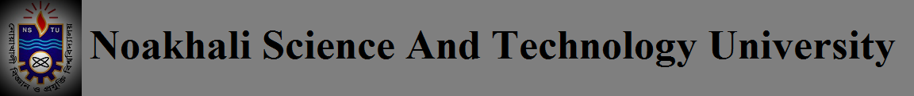

Vice Chancellor
Professor A K M Sayedul Hoque Chowdhury, Noakhali Science And Technology University
Education is the backbone of a nation.Educational institutes are called the nation-building workshop.
A number of universities are there in Bangladesh. Noakhali Science & Technology University (NSTU) is
one of them and one of the best public universities by virtue of its subjects. The site of the university
is in fact a pollution free area of Noakhali. Natural beauty around the university is appreciable
in comparison with other universities. The atmosphere of the university campus is very much convenient
and favorable for study. It spread the light of modern education of Science and Technology and practising
wisdom in every field of knowledge.
HOME
Why NSTU
The natural setting along with its human habitations of the Southern regions of
Bangladesh has been endowed with the vast and immense potentials that can fully be
harnessed only through creation of a band of skilled manpower equipped with the latest
knowledge of science and technology. In the beginning of its age and expending its activities
to spread the light of modern education of Science and Technology and practising wisdom in
every field of knowledge.
Noakhali Science and Technology University was established with immense hope for maintaining the
high quality education. Since its establishment, it is running without any session jam and student
politics. This University family is fully determined to gain its ultimate goal of success.
The university was established on March 24, 2005 and started its academic activities on June 22,
2006. NSTU actually belongs to four subjects of pure science which may contribute to the country
and nation as well as the whole world. The subjects are Computer Science & Telecommunication
Engineering (CSTE), Pharmacy, Applied Chemistry & Chemical Engineering (ACCE),Fisheries & Marine
Science (FIMS) at the opening of this university.Now more than 14 departments are offering degree
for the undergraduate levels.First four departments are also offering the post graduation in their respective subjects.
Library of NSTU is well furnished containing about 10000 books and around 1000 local and foreign journals.
Most important feature of this library is online library. Its construction has not been completed yet fully.
When it will be started with its full bloom, students as well as other registered people of this university will be able to issue books from the library through online, and also can read the books. It is being developed day by day.
The teachers are well educated having good art of presentation. They are also very much amicable and have
love and affection for the students. The curriculum of the university is high standard. Different
occasions are celebrated with a great festivity. Teachers and students of this university are very united.